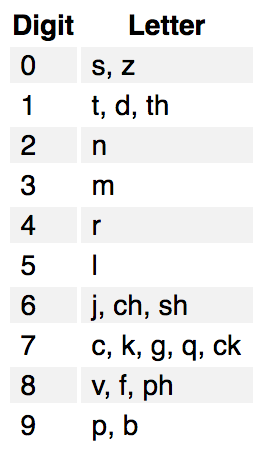

I don’t care how dumb you think you are, you can memorize 100 digits of pi
2024-08-25You can even memorize 200 digits of pi, or, if you’re anything like 15-year-old me, you can give up your social life for a month to memorize 500 digits of pi. It sounds hard, but trust me it only actually is hard if you try to do it by brute force. The trick is to use a mnemonic device, and one of the best ones to use is called the Method of Loci, or the Memory Palace.
The central idea behind the memory palace technique is that the human brain finds it easier to remember information when it’s associated with a specific location. And, by determining a route through that location, we can remember information in order. Awesome. Sounds great. But what does this actually look like?
Step by step
Start with a location. Ideally, one that’s already very familiar to you (your house, your walk to work, your favorite coffee shop). Next, create a route through that area. You might begin at your house’s front door and walk into the foyer, then the living room, then the kitchen, etc. You’ll have to memorize this route—consider simplifying it by always going clockwise, or using a straight path. Then, you’re going to identify specific areas along this route in which you can place the information. As an example, let’s say you’re an avid fruit enthusiast that loves the color pink and you wanted to memorize your grocery list (in order, for some reason) using your living room:
Groceries:
- Apple
- Orange
- Banana
- Pear
- Kiwi


You can take a clockwise route around the room, pick out 5 areas, and place a mental image of each fruit. Then, as you take a virtual walk around your room, you should see each item on your grocery list in order. Bam! Memory palace.
It’s not a very good one, though. For most people, the mental image and concept of an apple and an orange are very similar. Once you get to the grocery store, you might find that you can’t remember if it was the apple that came first or the orange. Maybe it’s even hard to recall if it was the pear that was sitting on the couch to the left, or the kiwi. With a memory palace full of fruits, things might start blending into each other.
Generally, the more variety your memory palace has, the stronger it is against corruption. And the weirder or crazier a thing is, the easier it is to remember. You should think of a relation between the item you want to memorize and something that holds a strong conceptual or visual presence in your mind. The idea is to carefully integrate the new information within the established network that already exists in your brain, not just shove it in there and hope for the best. Going back to the example, a revision to your memory palace might look like this:
Groceries:
- Apple → Apple iPhone
- Orange → Clockwork Orange
- Banana → Bananagrams
- Pear → Parachute (“pear-achute”)
- Kiwi → Kiwi bird

This memory palace will be much harder to forget.
Now, how do you use this technique to memorize Pi? Pi isn’t like your grocery list, where each item easily associates itself with lots of fun, wacky images. It’s just a string of numbers, all of which repeat themselves many, many times. Even if you assign a more memorable image for each of the 10 numbers, your memory palace will be filled with repeating images. As mentioned before, it’s important to minimize similarity between items in order to prevent confusion. Enter: The Major System.

Here, each digit is assigned to a distinct set of phonetic sounds, which you can then string together to make words. For example, the word “major” encodes the number string “364”. Notice that the vowels are ignored. Importantly, the system is based on sounds of consonants, not the consonants themselves. Although “garage” contains two g’s, its encoding would be “746,” reflecting how each g is pronounced. With this, you can convert groups of digits into unique, visualizable objects. To memorize 100 digits, you would create 33 images of 3-digit/consonant words, or 50 images of 2-digit/consonant words. When starting from a group of digits, say “141” for example, it can sometimes be difficult to think of a good corresponding word. Take to the internet for ideas, there are plenty of helpful resources put online by fellow major system enthusiasts.
Once you get the hang of it, you can get more creative. You can incorporate moving objects, interactive elements, or changing environments within your memory palace. Your palace, by the way, doesn’t even have to be a real place. If you wanted to, you could construct a completely imaginary location in which to store your memories (maybe even an actual palace). Theoretically, this is much harder than using a physical place, but it’s probably a lot more fun. Memory palaces can take any shape or form. I’ve even read a forum post where a person detailed how they encoded every country on earth in order of population size into a single, gnarled piece of drywood. Each tiny groove and crack on it represented a “location” in their mind; to them, that piece of wood held—quite literally—a world of knowledge.
Your brain is capable of amazing things—you just need to learn its strengths.